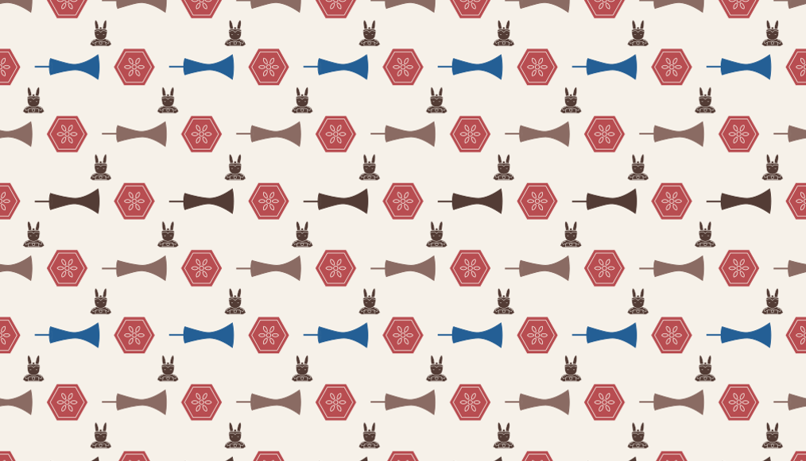

01 — INTRODUCTION
Every Place Has a Story. Every Symbol Holds a Meaning.
Culture lives in the places we inhabit, the traditions we practice, and the objects we create. From intricate porcelain patterns to everyday street food, each cultural element carries stories shaped by history, geography, and the people who give it meaning.
Cultural Atlas is an interactive digital humanities project that explores the diverse cultural identities of Chinese cities through research, visual design, and creative interaction.
Beginning with five cities—Beijing, Shanghai, Guangzhou, Taiyuan, and Dehong—the project invites visitors to discover local traditions, explore their histories, and engage with cultural elements in new ways.
Rather than simply observing culture, visitors are encouraged to explore, interpret, and create.
02 — THE PURPOSE
Making Culture Accessible Without Losing Its Complexity.
Cultural traditions are often introduced through recognizable images, symbols, and brief descriptions. While these representations make culture easier to approach, they can also leave the deeper stories behind them unexplored.
A porcelain motif is more than a decorative pattern. A traditional dish is more than its ingredients. Each reflects layers of history, local knowledge, and cultural exchange.
Cultural Atlas began with a question:
How can we make culture easier to explore without reducing it to a collection of isolated symbols?
The project connects visual simplicity with cultural depth, using digital technology to create accessible entry points into more complex cultural narratives.
A symbol should not be the end of cultural understanding, but the beginning of further exploration.
03 — THE PROCESS
From Cultural Research to Visual Expression.
Every visual element in Cultural Atlas begins with an exploration of the culture it represents.
The process brings together cultural research, digital archiving, visual abstraction, and interactive design.
STAGE 01 — RESEARCH
Discovering the Stories Behind Cultural Elements
I explore the histories, traditions, artistic practices, and everyday customs associated with different Chinese cities.
By gathering and organizing cultural information, I seek to understand not only what makes each cultural element recognizable, but also the historical and social contexts that give it meaning.
STAGE 02 — ARCHIVE
Connecting Information, Context, and Meaning
Research materials are organized into a digital cultural archive, allowing visitors to explore cultural elements across different cities and categories.
Rather than presenting cultural objects as isolated facts, the archive provides pathways to the histories and traditions behind them.
STAGE 03 — ABSTRACT
Translating Culture into a Visual Language
Drawing inspiration from researched cultural elements, I translate recognizable forms into simplified geometric icons.
Each icon serves as a visual interpretation of a cultural element while remaining connected to the information behind it.
STAGE 04 — CREATE
Turning Exploration into Participation
Visitors can select and combine icons from different cities to create their own cultural patterns.
Through this process, cultural exploration becomes a form of creative participation—one that encourages visitors to discover relationships between visual elements and the cultures they represent.

04 — THE PHILOSOPHY
Simplicity Should Open the Door to Complexity, Not Erase It.
A single symbol cannot capture the entirety of a culture.
But it can spark curiosity.
A visual pattern cannot tell every story.
But it can invite someone to discover one.
At Cultural Atlas, design is not a replacement for cultural knowledge, but a bridge toward it.
By connecting research with creative interaction, the project seeks to make cultural exploration more approachable, engaging, and open-ended.
Every symbol is an invitation to look deeper.
05 — BEHIND THE PROJECT
Where Culture, Design, and Technology Meet.
Cultural Atlas is an independent digital humanities project created at the intersection of computer science, cultural research, and visual communication.
It grew from my interest in how digital tools can help organize cultural knowledge, communicate complex ideas, and encourage new forms of participation.
Through this project, I explore how technology can make cultural knowledge more accessible while preserving the connections between visual representations and their original contexts.
Cultural Atlas does not aim to provide a complete or definitive representation of any city or tradition. Instead, it offers a starting point for exploration, interpretation, and further discovery.